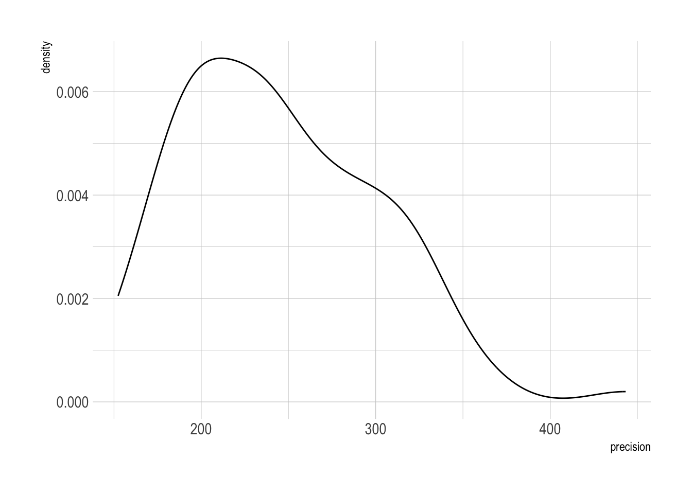
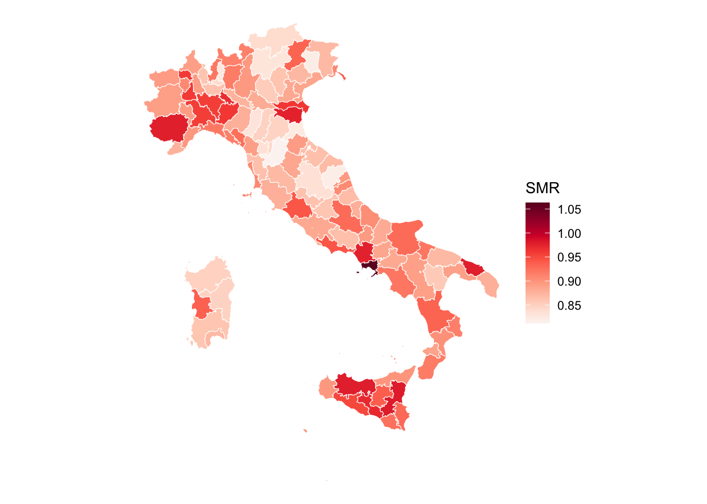

data <- read_rds(here("data", "italy", "italy_mortality.rds")) |> arrange(SIGLA)
data <- data |>
filter(year == 2018) |>
filter(month == 9)Software options
SHARP Bayesian Modeling for Environmental Health Workshop
Setting the scene
The aim of this practical is to recreate the nimble model in the hierarchical_modelling lab using INLA. As a reminder, here is the model again.
nimbleCode({
# priors
alpha ~ dnorm(0, 5)
sigma_p ~ T(dnorm(0, 1), 0, Inf)
for (j in 1:Np) {
theta[j] ~ dnorm(0, sd = sigma_p)
}
# likelihood
for (i in 1:N) {
y[i] ~ dpois(mu[i])
log(mu[i]) <- log(E[i]) + alpha + theta[province[i]]
}
})And let’s load in the data.
shp_italy <- read_rds(here("data", "italy", "italy_shp.rds")) |> arrange(SIGLA)
ggplot(aes(fill = mean.pop), data = shp_italy) +
geom_sf(colour = "white") +
scale_fill_continuous_sequential(palette = "Blues3") +
theme_void()Writing the model in INLA
INLA specifies the model in a formula, much like glm in base R. For a simple IID random effect for each province, we can write the model as
formula_iid <- deaths ~ 1 + f(SIGLA, model = "iid")This means we have an intercept signified by 1. This is the equivalent of alpha in the nimble model.
We can run the model by calling the inla function.
model <- inla(
formula_iid,
data = data,
E = expected,
family = "poisson",
control.predictor = list(link = 1), # log-link
control.compute = list(config = TRUE) # so that we can simulate draws of posterior
)Take a moment to look at each of the arguments and convince yourself that it is the same model as nimble.
Exploring the model in INLA
INLA often “just works”. If it runs, it has usually fitted correctly. If it doesn’t run, or it hangs, there is an issue with the model and it will let you know.
INLA has a lot of nice inbuilt functionality to explore how the model has fit.
Note, as explained in the lecture, INLA does not fit models through sampling. It approximates the posterior distribution using Gaussian distributions (the Laplace approximation).
summary(model)
Call:
c("inla.core(formula = formula, family = family, contrasts = contrasts,
", " data = data, quantiles = quantiles, E = E, offset = offset, ", "
scale = scale, weights = weights, Ntrials = Ntrials, strata = strata,
", " lp.scale = lp.scale, link.covariates = link.covariates, verbose =
verbose, ", " lincomb = lincomb, selection = selection, control.compute
= control.compute, ", " control.predictor = control.predictor,
control.family = control.family, ", " control.inla = control.inla,
control.fixed = control.fixed, ", " control.mode = control.mode,
control.expert = control.expert, ", " control.hazard = control.hazard,
control.lincomb = control.lincomb, ", " control.update =
control.update, control.lp.scale = control.lp.scale, ", "
control.pardiso = control.pardiso, only.hyperparam = only.hyperparam,
", " inla.call = inla.call, inla.arg = inla.arg, num.threads =
num.threads, ", " keep = keep, working.directory = working.directory,
silent = silent, ", " inla.mode = inla.mode, safe = FALSE, debug =
debug, .parent.frame = .parent.frame)" )
Time used:
Pre = 0.632, Running = 0.182, Post = 0.0296, Total = 0.843
Fixed effects:
mean sd 0.025quant 0.5quant 0.975quant mode kld
(Intercept) -0.111 0.008 -0.127 -0.111 -0.095 -0.111 0
Random effects:
Name Model
SIGLA IID model
Model hyperparameters:
mean sd 0.025quant 0.5quant 0.975quant mode
Precision for SIGLA 248.49 57.53 156.78 241.40 380.64 78.30
Marginal log-Likelihood: -8587.67
is computed
Posterior summaries for the linear predictor and the fitted values are computed
(Posterior marginals needs also 'control.compute=list(return.marginals.predictor=TRUE)')model$summary.fixed mean sd 0.025quant 0.5quant 0.975quant mode
(Intercept) -0.1112342 0.008263871 -0.1274977 -0.1112246 -0.09502512 -0.1112246
kld
(Intercept) 7.64936e-09head(model$summary.random$SIGLA) ID mean sd 0.025quant 0.5quant 0.975quant mode
1 AG 0.062246894 0.04198002 -0.019380821 0.061979756 0.14537574 0.061973998
2 AL 0.067011846 0.03862383 -0.008183094 0.066805599 0.14336757 0.066801393
3 AN -0.033419516 0.03934399 -0.110965189 -0.033300640 0.04345855 -0.033298051
4 AO -0.005941846 0.05418960 -0.112690858 -0.005871257 0.10041150 -0.005870260
5 AP 0.010008252 0.04825750 -0.084563348 0.009928865 0.10502460 0.009927264
6 AQ 0.031939426 0.04449382 -0.054893641 0.031754658 0.11980875 0.031750648
kld
1 1.023182e-08
2 7.096878e-09
3 3.053874e-09
4 1.272142e-08
5 5.643873e-09
6 6.119930e-09Although the model isn’t fit using samples, we can use INLA to sample from the posterior.
posterior_samples <- inla.posterior.sample(1000, model)
SMR <- inla.posterior.sample.eval(\(...) exp(`(Intercept)` + SIGLA), posterior_samples) |>
apply(MARGIN = 1, FUN = median)tibble(precision = inla.hyperpar.sample(100, model)) |>
ggplot(aes(x = precision)) +
geom_density()
Let’s work out the SMR for each province and plot the output.
shp_italy |>
mutate(SMR = SMR) |>
ggplot(aes(fill = SMR)) +
geom_sf(colour = "white") +
scale_fill_continuous_sequential(palette = "Reds") +
theme_void()
Customising the priors
The formula gives us an IID effect, but no control over the hyperprior for the variance of the effect. INLA usually chooses some good defaults for you, but here, I will put a non-default prior on the precision (1/sigma**2).
formula_iid_priors <- deaths ~ 1 + f(SIGLA, model = "iid", hyper = list(prec = list(prior = "loggamma", param = c(0.01, 0.01))))model <- inla(
formula_iid_priors,
data = data,
E = expected,
family = "poisson",
control.predictor = list(link = 1),
control.compute = list(config = TRUE)
)Fitting a spatial model with INLA
INLA is used widely amongst spatial statisticians. There are a lot of inbuilt functions which make the task of inference in spatial settings very efficient. INLA can deal with both areal data and point processes. For more information, see the examples.
Here, we’re going to fit a BYM model in place of the IID effect.
For this, INLA needs to know the spatial adjacency matrix (“graph” in INLA’s language). The following code extracts the adjacency matrix from the shapefile.
data = data |> arrange(SIGLA)
shp_italy <- shp_italy |> arrange(SIGLA)
italy_nb <- poly2nb(shp_italy,row.names = data$SIGLA)
italy_adj <- nb2INLA(file = here("data", "italy", "italy.graph"), nb = italy_nb)And we can visualise the adjacency matrix.
G <- inla.read.graph(here("data", "italy", "italy.graph"))
image(inla.graph2matrix(G), xlab = "", ylab = "") # plot adjacency matrixFinally, let’s use the graph in a BYM model.
data <- data |>
mutate(provincia_id = data |> group_by(SIGLA) |> group_indices())
formula_spatial <- deaths ~ 1 + f(provincia_id, model = "bym", graph = G)
model_spatial <- inla(
formula_spatial,
data = data,
E = expected,
family = "poisson",
control.predictor = list(link = 1),
control.compute = list(config = TRUE)
)summary(model_spatial)
Call:
c("inla.core(formula = formula, family = family, contrasts = contrasts,
", " data = data, quantiles = quantiles, E = E, offset = offset, ", "
scale = scale, weights = weights, Ntrials = Ntrials, strata = strata,
", " lp.scale = lp.scale, link.covariates = link.covariates, verbose =
verbose, ", " lincomb = lincomb, selection = selection, control.compute
= control.compute, ", " control.predictor = control.predictor,
control.family = control.family, ", " control.inla = control.inla,
control.fixed = control.fixed, ", " control.mode = control.mode,
control.expert = control.expert, ", " control.hazard = control.hazard,
control.lincomb = control.lincomb, ", " control.update =
control.update, control.lp.scale = control.lp.scale, ", "
control.pardiso = control.pardiso, only.hyperparam = only.hyperparam,
", " inla.call = inla.call, inla.arg = inla.arg, num.threads =
num.threads, ", " keep = keep, working.directory = working.directory,
silent = silent, ", " inla.mode = inla.mode, safe = FALSE, debug =
debug, .parent.frame = .parent.frame)" )
Time used:
Pre = 0.54, Running = 0.211, Post = 0.217, Total = 0.967
Fixed effects:
mean sd 0.025quant 0.5quant 0.975quant mode kld
(Intercept) -0.111 0.008 -0.126 -0.111 -0.096 -0.111 0
Random effects:
Name Model
provincia_id BYM model
Model hyperparameters:
mean sd 0.025quant
Precision for provincia_id (iid component) 324.47 99.66 170.29
Precision for provincia_id (spatial component) 1631.68 1955.48 218.55
0.5quant 0.975quant mode
Precision for provincia_id (iid component) 310.63 558.76 68.56
Precision for provincia_id (spatial component) 1055.28 6686.34 14.21
Marginal log-Likelihood: -8550.33
is computed
Posterior summaries for the linear predictor and the fitted values are computed
(Posterior marginals needs also 'control.compute=list(return.marginals.predictor=TRUE)')model_spatial$summary.fixed mean sd 0.025quant 0.5quant 0.975quant mode
(Intercept) -0.1111014 0.007627466 -0.1261205 -0.1110934 -0.09612805 -0.1110935
kld
(Intercept) 1.254992e-08head(model_spatial$summary.random$provincia_id) ID mean sd 0.025quant 0.5quant 0.975quant mode
1 1 0.054830035 0.04106651 -0.024796422 0.054490455 0.13635411 0.054480613
2 2 0.069409395 0.03728332 -0.003239953 0.069222249 0.14310055 0.069216128
3 3 -0.043565804 0.03902063 -0.120255487 -0.043526229 0.03290309 -0.043525062
4 4 0.008671302 0.05355719 -0.097076530 0.008836831 0.11350040 0.008840978
5 5 -0.003647778 0.04701202 -0.095277276 -0.003910266 0.08943407 -0.003919437
6 6 0.028809903 0.04269675 -0.054407666 0.028575407 0.11332071 0.028566005
kld
1 1.646600e-08
2 6.754201e-09
3 1.185229e-09
4 1.254112e-08
5 1.205619e-08
6 1.074940e-08Compare and contrast the model fits using the plotting code above. Try and test out different spatial models, such as "besag".